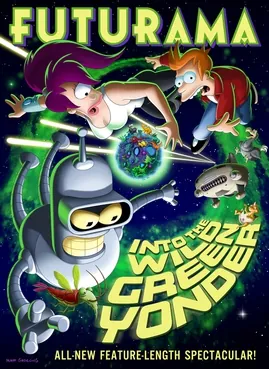

The genetics
Genetics appears as a comic cosmic myth. The Encyclopods are giant creatures that evolved to preserve the DNA of endangered species so that they can be restored, and their last egg must hatch before a developer destroys it; they are opposed by the Dark Ones, which evolved to destroy all life, in what the film calls an evolutionary arms race. Once born, the Encyclopod gathers the DNA of the dead Hutch and ignores Fry's protest that humans are not endangered, while Zoidberg eats the dead Dark One before its DNA can be saved. The film's satire targets the greedy developer Leo Wong and environmental destruction, with Farnsworth briefly corrupted by a bribe; DNA preservation is cast as the force of life. The Encyclopod is a whimsical take on gene banks and frozen zoos, which store genetic material from endangered species, though no real biobank restores species on demand.
How genetics is portrayed
- Overall portrayal of genetics
- positive Preserving DNA is the cause of the film's heroes against a species bent on destroying life and a greedy developer; the jokes about Hutch and Zoidberg are affectionate.
- Outcome of the genetic intervention
- positive The newborn Encyclopod defeats the last Dark One and preserves Hutch's DNA, saving life in the galaxy.
- The Encyclopod
- hero Aim: benevolent (positive). An alien species (affiliation other) that evolved to preserve the DNA of endangered species; once hatched it kills the Dark One and stores Hutch's DNA, and the film presents it as the champion of life.
The story
On Mars, Amy's father Leo Wong demolishes old Mars Vegas to build a bigger resort, and Leela rescues a Martian muck leech, the last of its kind, from the site. An eco-feminist protester's necklace lodges in Fry's brain and makes him telepathic, and a secret society of telepaths, the Legion of Mad Fellows, tells him that two species are locked in an ancient evolutionary struggle: the Encyclopods, who preserve the DNA of endangered species, and the Dark Ones, who want to destroy all life. The last Encyclopod egg is a violet dwarf star that Leo plans to implode to make way for the universe's largest miniature golf course, a project Professor Farnsworth approved after being bribed. Leela and Amy join the eco-feminists to stop it, while Fry infiltrates Leo's security staff to find the last Dark One. At the demolition ceremony the leech is revealed as the Dark One; the reborn Encyclopod kills it and preserves the DNA of Hutch, an ally it has killed, and the crew escape into a wormhole.